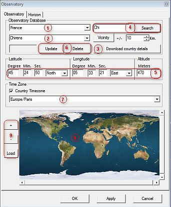

Observatorium instellingen
Via het menu: Instellingen → Observatorium
Dit dialoogvenster kun ook je oproepen via het  icoontje op de linker balk, of via Instellingen → Alle configuratie instellingen → Alle configuratie instellingen.
icoontje op de linker balk, of via Instellingen → Alle configuratie instellingen → Alle configuratie instellingen.
Het dialoogvenster voor de observatorium instellingen heeft twee tabs:
Voor een juiste weergave van de objecten op de kaart, vergeet niet de datum / tijd instellingen van het programma te controleren.
Observatorium
 Stel de lokatie van je observatiepositie op Aarde in om deze te gebruiken bij de berekening van de azimut en hoogte boven de horizon van de objecten in de kaart.
{kind=link}
- Selecteer je land (1)
- Selecteer de plaats van waar je observeert (2)
- Om je keuze mogelijkheden te verbeteren, download (3) het detail-bestand van je land
- Voer (een deel van) de naam in van een nabije stad in het zoek-invoervenster (4)
- Klik de “zoek” knop (4)
- Selecteer deze nabije stad uit de pick-list in (2)
- Klik de “omgeving” knop
- Nu kun je de plaatsen vinden in de directe nabijheid van de stad die je eerder selecteerde bij (2). Kies degene die je het beste past.
- Als het bovenstaande onvoldoende is, dan kun je ook nog plaatsen toevoegen, wijzigen of verwijderen met de “Bijwerken” of “Verwijder” knoppen. (6). Om een plaats toe te voegen, voer de naam in de lijst (2), de coördinaten (5) de hoogte boven zeeniveau in meters en klik “Bijwerken”. Controleer ook dat het programma de juiste tijdzone gebruikt (7).
- Als je niet precies je observatorium positie kent, klik dan eenvoudigweg op de wereldkaart en klik met de muis in de kaart (8) wat ongeveer je positie is. Je kunt inzoomen in de kaart, en je zou de kaart kunnen vervangen door een beter exemplaar. De enige beperking is dat je kaart op dezelfde projectie moet zijn gebaseerd.
Het is belangrijk om de juiste tijdzone van je observatorium in te stellen omdat het programma dit nodig heeft om de UT af te leiden van je zomertijd instelling. Dit is erg belangrijk om goede ephemeriden-berekeningen te maken zodat je kaart de objecten op de juiste plek kan weergeven.
Horizon
 Wanneer je kaart ingesteld staat om het Alt-Az coördinatensysteem te gebruiken, dan kun je jouw lokale horizon zichtbaar maken als een lijn of (ondoorzichtig) gebied. Om meer te lezen over het veranderen van het coördinatensysteem, klik hier.
Wanneer je kaart ingesteld staat om het Alt-Az coördinatensysteem te gebruiken, dan kun je jouw lokale horizon zichtbaar maken als een lijn of (ondoorzichtig) gebied. Om meer te lezen over het veranderen van het coördinatensysteem, klik hier.
Je kunt je lokale horizon-bestand laden door het pad naar dit bestand juist in te stellen.
Schrijf je eigen horizon bestand
Je kunt zelf je horizon in een bestand definiëren door een ASCII-tekstverwerker of een Unix-tekstverwerker als “vi”. Als voorbeeld kun je het bijgevoegde bestand [installatie map]/data/horizon/horizon_Geneve.txt openen. Zoals je in dit bestand kunt zien is de horizon gedefiniëerd als een reeks van records. Iedere regel bestaat uit een paar van twee waarden. De eerste waarde is de 'azimut', de tweede is de 'hoogte' boven de theoretische horizon van 0°. De eenheden zijn in graden (decimaal). Daarbij komt een azimut van 0° overeen met het noorden oplopend via oost (90°), zuid (180°), west (270°). Een hoogte van 90° is het zenit. De punt (.) gebruik je als decimaal scheidingsteken. Als je commentaar in je horizon bestand wilt opnemen, dan moet je de informatie op de regel vooraf laten gaan door het 'hekje' (#).
Andere mogelijkheden
De beschrijving van de andere mogelijkheden zijn duidelijk.
* Misschien wil je objecten weergeven onder de horizonlijn.
* Als je observatiepositie zich hoog op een berg bevindt, dan wil je de verlaagde horizon misschien wel afbeelden in plaats van de theoretische 0° horizon.
Bovendien kun je de temperatuur en de luchtdruk opgeven. Dit geeft Cartes du Ciel / Sterrenkaarten de mogelijkheid om voor atmosferische refractie te corrigeren.